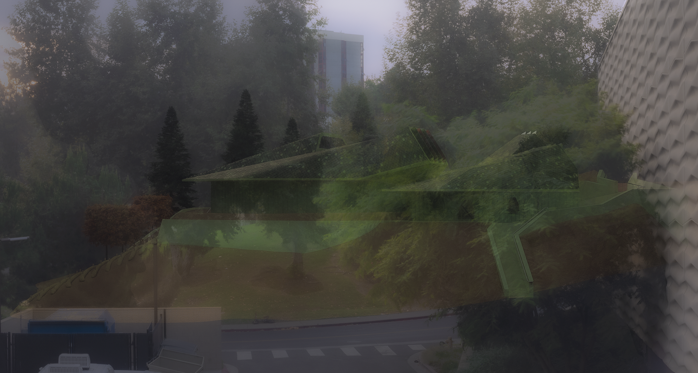

Studio: Bruin en groen
Instructor: Neil Denari
Fall 2021
This studio
tags: green, topography, campus, trees, ceramics, tea pots

01. Roof view

02. Lobby interior

03. Ghosted collage, view from Mo Ostin building